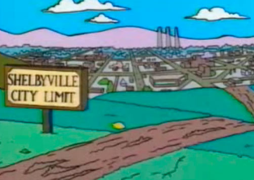

Somos mejores que Shelbyville
Shelbyville es una ciudad ficticia en la serie animada Los Simpson. Es la ciudad vecina y rival de Springfield. Fue fundada en 1796 por Shelbyville Manhattan, quién abogó al derecho de casarse con sus primas, causando un desacuerdo con Jebediah Springfield, por lo que ambos tomaron caminos diferentes.
La intensa rivalidad entre ambas ciudades continúa hasta estos días, especialmente en el capítulo de la sexta temporada "El limonero de Troya", en el cual los residentes de Shelbyville roban un preciado limonero desde Springfield. También en el capítulo "Who Shot Mr. Burns Part Two" cuando los habitantes de Springfield destruyen la máquina de Burns, esta cae por las faldas del cerro, destruyendo un poblado. Luego, Krusty pregunta "¿Qué pueblo destruímos?", a lo que Skinner responde "Shelbyville", y todo el mundo empieza a festejar. En varios episodios, particularmente en el ya mencionado, se sugiere que Shelbyville es un universo paralelo a Springfield.
Según un relato que les cuenta Abraham Simpson a un grupo de niños de Springfield en el episodio "El limonero de Troya", Shelbyville Manhattan era el compañero de viaje de Jebediah Springfield.
Al llegar a la colina que separa ambas ciudades, Shelbyville se detiene a exponer, junto con Jebediah, algunas de las razones por las cuales desean fundar una nueva ciudad. Entre ellas, Shelbyville menciona la de "casarnos con nuestras primas", algo a lo que Jebediah se opone. De ese modo, deciden que cada uno funde su propia ciudad con sus propias leyes y costumbres.
Como dato curioso, en el mismo episodio puede apreciarse que el símbolo de la ciudad de Shelbyville es una estatua de Shelbyville Manhattan rodeado por dos mujeres que presumiblemente son primas de éste. Asimismo, Bart exclama "¡Miren, la bonita prima de alguien!" para distraer la mirada de la banda de niños de Shelbyville que le persiguen.
Fue aplastada por un bloqueador solar de Burns, pero se supone que fue reconstruida más tarde puesto que los Simpson la visitaron posteriormente. Finalmente, Shelbyville estalló en una explosión nuclear en el episodio "24 minutos", donde al final del episodio Jack Bauer felicita a Lisa y apunta a Bart con su arma por una broma telefónica, cuando de pronto estalla una explosión nuclear y todos en el auditorio de la escuela primaria de Springfield se asustan. Bauer dice que fue Shelbyville y todos se calman. La última aparición fue cuando la familia Simpson fue al distrito de teatros de Shelbyville, donde entraron a una obra que hablaba mal de Springfield, y de ahí Marge decide fundar un teatro de ópera en Springfield.
- Concurso de Chile Picante la el proximo fin de semana.
- Festival de cine de Springfield.


Somos una ciudad pujante
Cuando este el monoriel
Vamos a ser del primer mundo